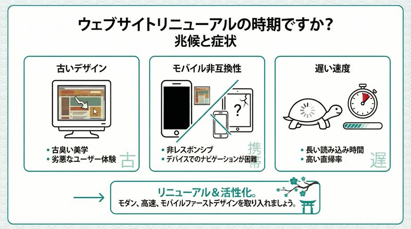

「ホームページを作ってから大分時間が経つけど、そろそろリニューアルした方がいいのかな？」
企業のWeb担当者や経営者の方から、このようなご相談をよくいただきます。
ホームページには「賞味期限」とも言える寿命があります。一般的には3〜5年が目安と言われていますが、それはあくまで平均的な話。実際のところ、技術の進化やビジネス環境の変化によっては、もっと早くリニューアルが必要になるケースもあります。
今回は、埼玉県戸田市でWeb制作を行っているミアキスの視点で、ホームページをリニューアルすべき具体的な「サイン」について解説します。「まだ大丈夫」と思っていても、実は機会損失を生んでいるかもしれません。
1. ホームページのリニューアル目安は「3～5年」
一般的に、ホームページの寿命は3〜5年と言われています。なぜこのような年数が目安となるのでしょうか。
Webデザインのトレンド変化
3年も経つと、Webデザインのトレンドは大きく変わります。かつて流行していたデザインも、数年経つと「一昔前のサイト」「古臭いサイト」という印象を与えてしまうことがあります。デザインが古いと、企業イメージも「時代遅れ」「停滞している」と取られかねません。
技術革新のサイクル
ブラウザやデバイス（スマホ、タブレットなど）の進化は非常に早いです。5年前の常識が現在では通用しないことも多々あります。新しい技術に対応していないサイトは、表示崩れを起こしたり、セキュリティリスクが高まったりする可能性があります。
2. 見逃してはいけない「技術的なサイン」
年数だけでなく、現在のサイトの状態を見て判断することも重要です。以下のような状態であれば、早急なリニューアルを検討すべきです。
スマホで見た時に見づらい（レスポンシブ非対応）
今やBtoB、BtoC問わず、多くのユーザーがスマートフォンからアクセスします。スマホで見たときにPC用の画面がそのまま縮小表示されていたり、文字が小さすぎて読めなかったりする場合、ユーザーはすぐに離脱してしまいます。Googleも「モバイルファーストインデックス（MFI）」を導入しており、スマホ対応していないサイトは検索順位でも不利になります。
「保護されていない通信」と表示される（SSL化未対応）
ブラウザのアドレスバーに「保護されていない通信」という警告が出ていませんか？これはSSL（暗号化通信）に対応していない証拠です。セキュリティ上のリスクがあるだけでなく、ユーザーに「怪しいサイト」という不信感を与えてしまいます。現在ではSSL化は必須です。
表示速度が遅い
クリックしてからページが表示されるまでに何秒もかかっていませんか？表示速度が遅いと、ユーザーのストレスになり、直帰率（1ページだけ見て帰ってしまう率）が高まります。画像サイズの最適化や、最新の画像フォーマット（WebP、AVIFなど）への対応など、技術的な改善が必要です。
3. ビジネスチャンスを逃さない「ビジネス的なサイン」
技術的な問題がなくても、ビジネスの状況によってはリニューアルが必要です。
事業内容やターゲットが変わった
会社の成長とともに、主力サービスやターゲット層が変わることはよくあります。「昔は個人向けだったけど、今は法人向けに力を入れている」といった場合、ホームページのデザインやコンテンツもそれに合わせて変更する必要があります。ターゲットとサイトの雰囲気がズレていると、本来獲得したい顧客を逃してしまいます。
問い合わせや採用応募が減ってきた
「以前は問合せがあったのに、最近はぱったり…」という場合、サイトの情報が古くなっていたり、競合他社のサイトの方が魅力的だったりする可能性があります。競合と比較して見劣りしていないか、一度客観的に見直してみましょう。
更新が自分たちでできない
「ちょっとしたお知らせを載せるだけなのに、制作会社に依頼してお金がかかる…」そんな悩みはありませんか？WordPressなどのCMS（コンテンツ管理システム）を導入してリニューアルすれば、自社で簡単に更新できるようになります。情報の鮮度はWeb集客において非常に重要です。
4. 戸田市の企業様も他人事ではありません
ここ埼玉県戸田市周辺でも、古くなってしまったホームページをそのまま放置されている企業様を見かけることがあります。
特に地域密着型のビジネスでは、「検索してホームページを見る」→「信頼できそうだから問い合わせる・来店する」という流れが一般的です。ホームページがきちんと整備されているかどうかは、リアルの店舗や会社の看板と同じくらい重要です。
5. まとめ：機会損失を防ぐために
ホームページのリニューアルは、単なる「模様替え」ではありません。企業の信頼性を高め、集客や採用などの成果を最大化するための重要な投資です。
もし、あなたの会社のホームページが以下のいずれかに当てはまるなら、リニューアルのタイミングかもしれません。
- 公開から5年以上経過している
- スマホで見づらい
- SSL化されていない（警告が出る）
- 情報が古く、更新もできない
- 問い合わせが減っている
「今のサイトで大丈夫かな？」と不安に思われた方は、ぜひ一度プロに診断してもらうことをおすすめします。
株式会社ミアキスでは、埼玉県戸田市・さいたま市エリアを中心に、中小企業様のホームページ制作・リニューアルを承っております。現状のサイト診断や、ご予算に合わせたリニューアルプランのご提案も可能ですので、まずはお気軽にご相談ください。